This guide will show you how to configure a Play web application to import it in Scala IDE, how to configure Scala IDE to work fine with the Play framework and finally a simple example of a change in the web application.
[luc] links to installation instructions
To be able to create a Play web application, the Play framework need to be installed. If you have not installed it already, follow this few steps, or use the Play documentation.
Download Play framework 2.0-beta from http://www.playframework.org/2.0.
Unzip it in your preferred location. Let’s say /path/to/play20 for the purpose of this document.
For convenience, add the Play folder to your system PATH:
export PATH=$PATH:/path/to/play20
In your development folder, ask Play to create a new web application, as a simple Scala application.
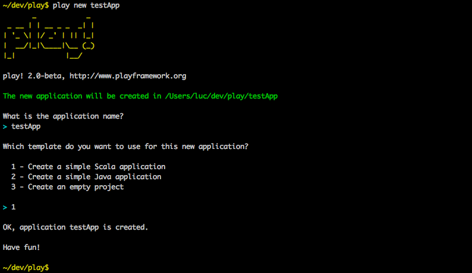Go into the application folder.
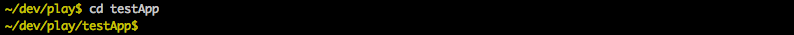And launch Play.
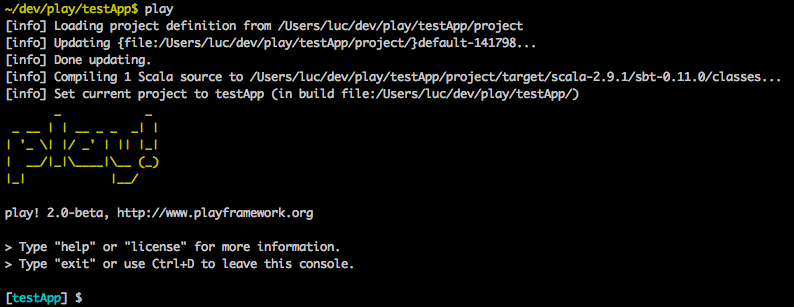In Play, launch your newly created web application.
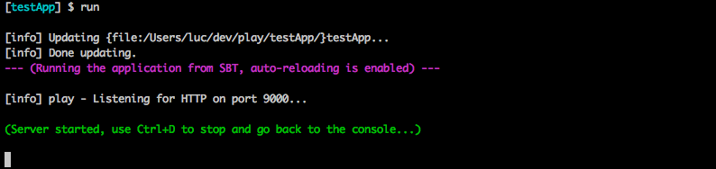Check that the application works: http://localhost:9000/.
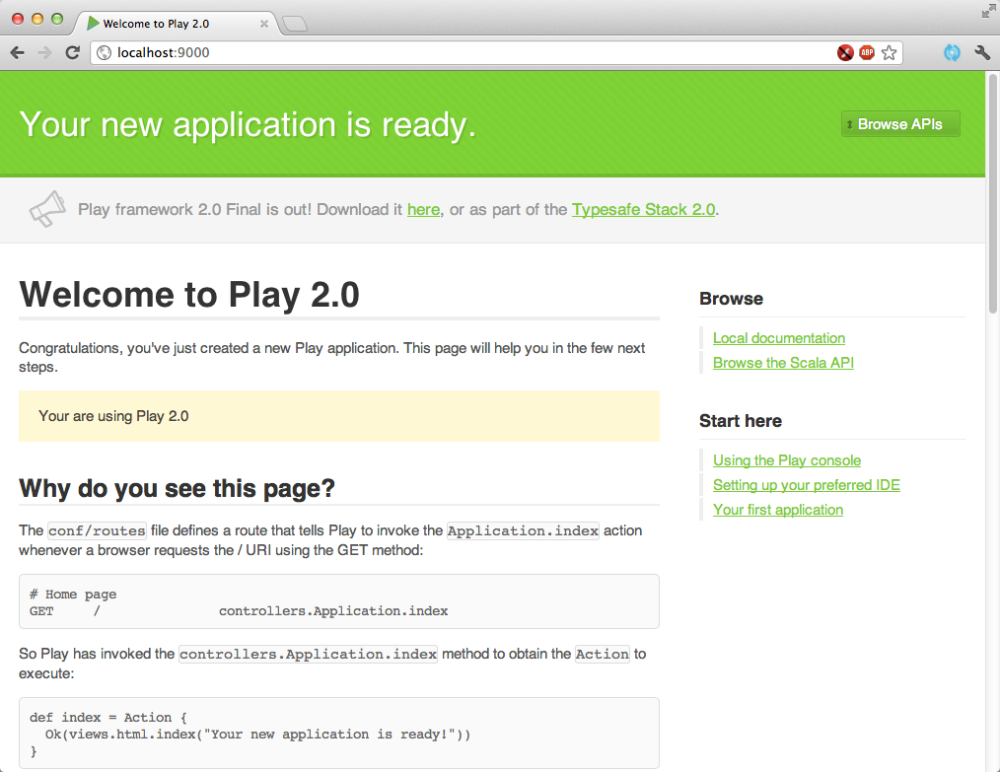Now that the Play application is running, it needs to be configured so it can be imported into Scala IDE.
The eclipsify support is not yet integrated it Play 2.0, so we are using sbteclipse to make it an Eclipse project.
First, exit Play using ctrl-d, and then exit.
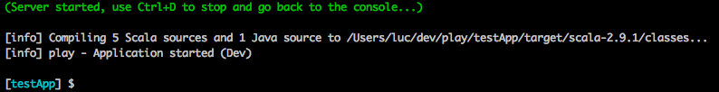Add sbteclipse to sbt by creating the project/build.sbt file and adding the following lines.
resolvers += Classpaths.typesafeResolver
addSbtPlugin("com.typesafe.sbteclipse" % "sbteclipse" % "1.5.0")

Go back into Play.
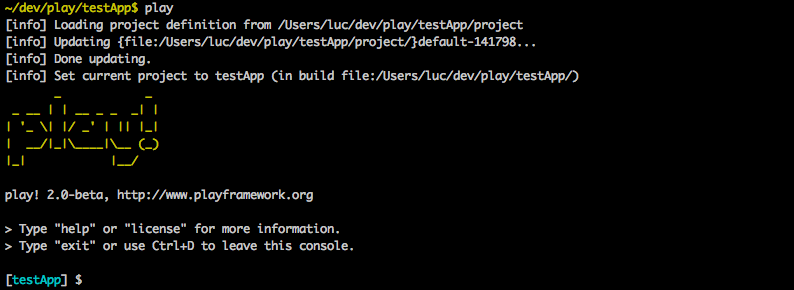Generate the Eclipse project configuration.
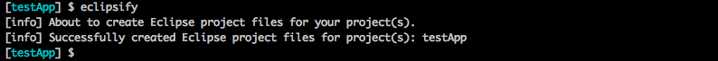And relaunch the web application, so it is available later.
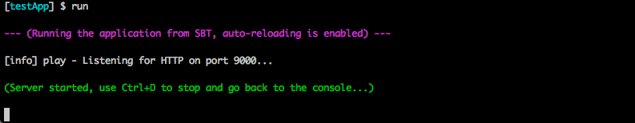Setting a few preferences in Eclipse will make everything easier to use.
Open the internal web browser view in Eclipse, and check you can access your web application.
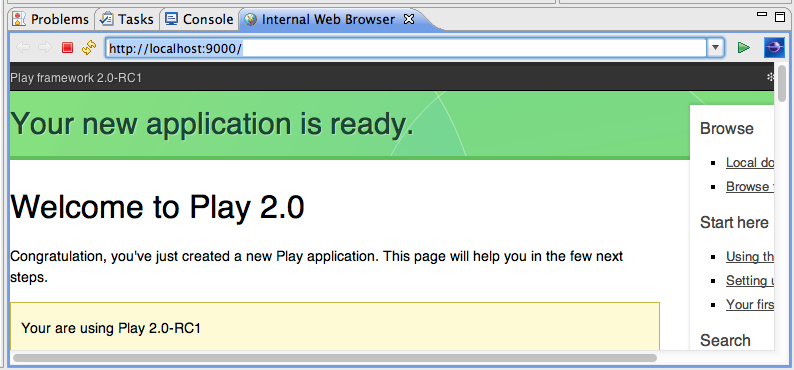Configure Eclipse so changes on the filesystem are automatically picked up.

If you don’t have the Web Development Tools for Eclipse installed, Eclipse opens .html files in a web browser. Configure it to use the Scala Editor instead.

Everything is setup, it is time to import the project in the IDE.
Import the Play 2.0 application as an Existing Projects into Workspace.
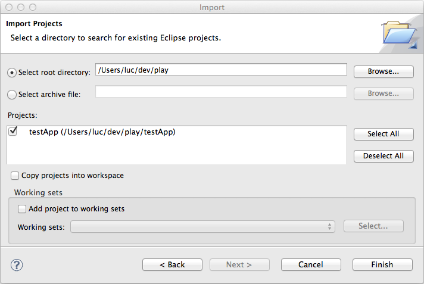Everything is good, everything compiles.
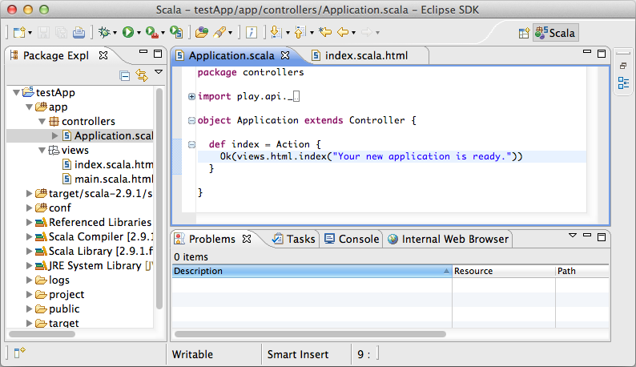Now that everything is setup, we can change the content. Let’s add a way to have a quote on the main page.
First, create the models.Quote class using the new Scala Class wizard.
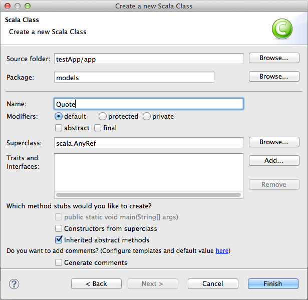Add variables to models.Quote.
package models
case class Quote(val text: String, val author: String) {
}
Add an extra parameter to the index.scala.html view and update the layout.
@(message: String, quote: models.Quote)
@main("Welcome to Play 2.0 beta") {
@play20.welcome(message)
<p>@quote.text<em> - @quote.author</em></p>
}
The templates are transformed into Scala code by the Play framework, so use the refresh button in the internal web browser to trigger it.
Play returns a compilation error, the application is not using the template correctly. The error is also visible in the code of Application.scala.
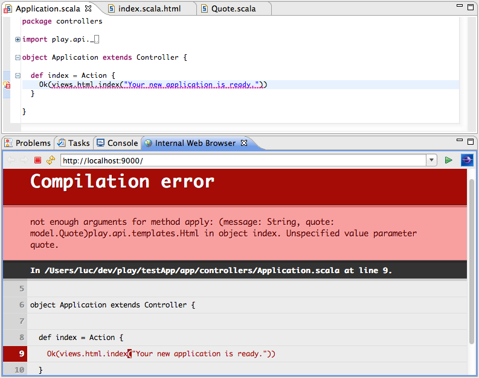Fix the application code, using a smart quote.
def index = Action {
Ok(views.html.index("Your new application is ready.",
Quote("Citer les pensees des autres, c'est regretter de ne pas les avoir trouvees soi-meme.",
"Sacha Guitry")))
}
The code compiles. Check the result in the internal web browser.
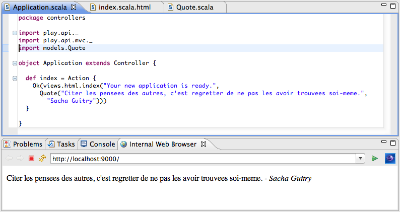You now have all you need to create great web applications with Play 2.0 and Scala.
For more information about Play 2.0, check out the Play 2.0 wiki.
For more information about Scala, go to the documentation website or get the downloadable eBook.